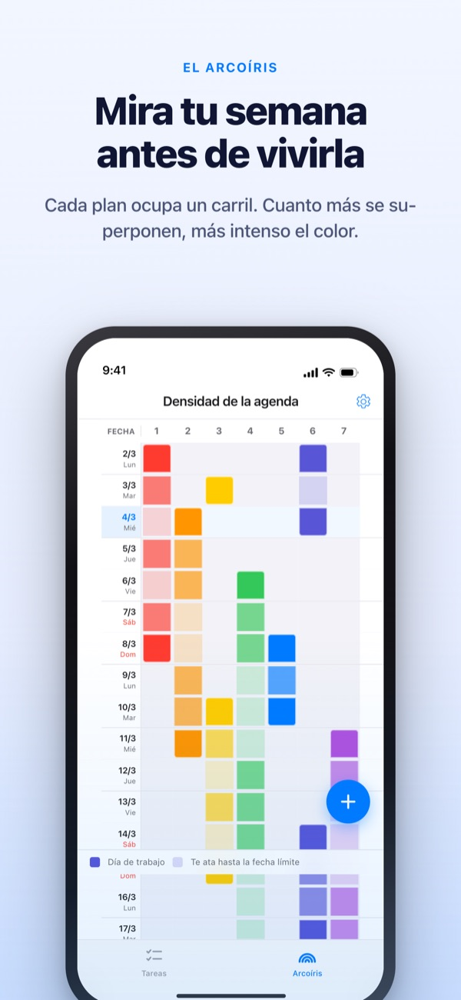
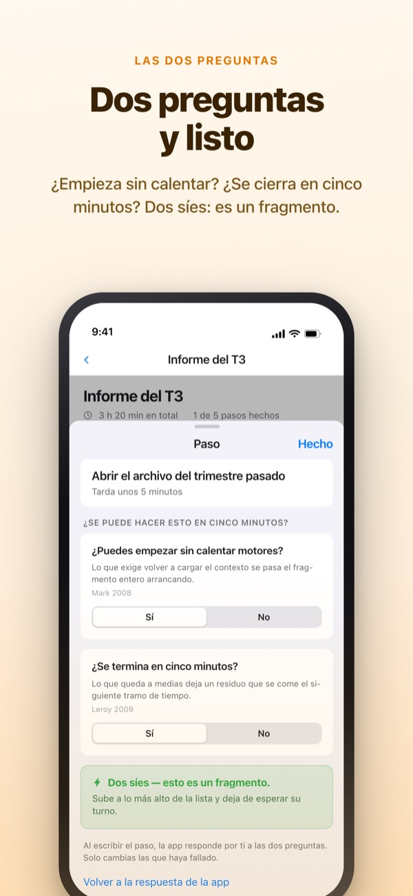
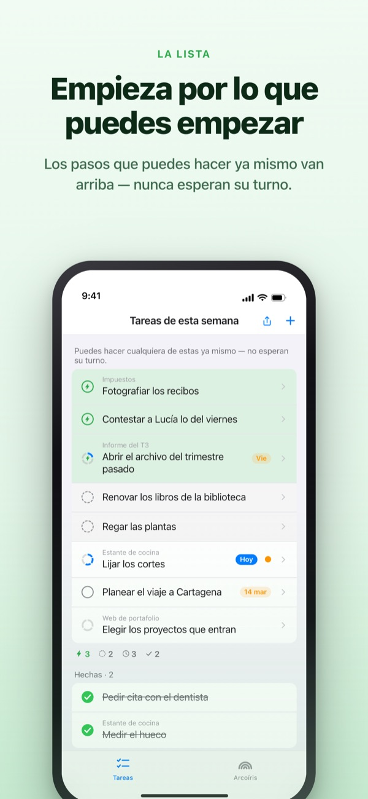
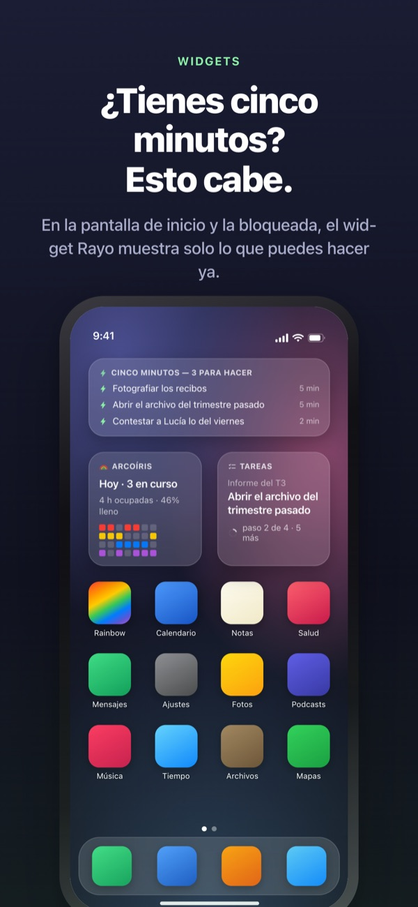

Ve venir la semana cargada.
Aprovecha los cinco minutos que tienes.
Cuanto más se solapa tu trabajo, más intenso se vuelve el arcoíris. Divide una tarea grande en pasos y el que puedes hacer en un hueco ya te espera arriba.
El arcoíris, dividir tareas, el temporizador y la sincronización con el Mac son gratis.

Pruébalo tú
«Informe del T3» ya está dividido en cinco pasos. Elige uno, cambia su tiempo o da la vuelta a una respuesta. Solo un paso con dos síes se convierte en un fragmento que haces en cinco minutos.
¿El calendario parece vacío y aun así la semana te deja sin aire?
Un calendario te dice si algo está programado, no cuánto se amontona encima. Que tres entregas caigan en la misma semana lo descubres cuando ya estás dentro, y los cinco minutos sueltos se van releyendo la lista de tareas. Rainbow of Desire dibuja tu semana como una cuadrícula, oscurece donde se solapa y aparta los pasos que caben en un hueco.
Dos preguntas y queda claro
Al dividir una tarea grande, cada paso recibe dos preguntas. ¿Puedes empezar sin calentar motores? ¿Se termina en cinco minutos?
Solo un doble sí lo convierte en fragmento. La app responde primero según el tiempo y tus palabras, y tú solo das la vuelta a una respuesta cuando falla.

¿Un hueco? Mira solo arriba
Desliza una tarea a la derecha para ponerle un rayo y se salta la fila hasta quedar arriba. No hace falta leer toda la lista.
Si los pasos se esperan entre sí lo decides una vez por grupo. En orden muestra el primer paso pendiente; Cualquier orden, el fragmento que puedes coger ya.

A la vista sin abrir la app
El temporizador cuenta hasta que termina el evento, y el tiempo restante se ve también en la Dynamic Island y en la pantalla bloqueada.
Los widgets de pantalla de inicio y bloqueada muestran lo que tienes entre manos, lo que cabe en cinco minutos y el arcoíris de la semana. (Los widgets son Pro)

Empieza en tres pasos
- 1
Traza un evento
Mantén pulsada una casilla vacía el día de inicio y toca el día final: aparece una línea en el arcoíris.
- 2
Divide lo grande
Toca una tarea, escribe sus pasos y elige un tiempo. La app responde antes las dos preguntas.
- 3
En un hueco, mira arriba
Los fragmentos y las tareas con rayo se juntan arriba sin esperar turno.
Lo que verás en pantalla
- Casilla oscura · casilla clara
- los días en que de verdad trabajas en ello, y lo que queda hasta la fecha final
- Una fila llena
- un día con tanto a la vez que un retraso mueve el día entero
- Fragmento
- sí a las dos preguntas; cógelo cuando tengas cinco minutos
- Tramo corto
- no necesita calentar, pero no acaba en un fragmento; se termina de una sentada
- Tramo
- necesita calentar o dura 45 minutos o más; va en tiempo reservado
- Rayo
- tu propia marca de «ya mismo»; salta arriba
- En orden · Cualquier orden
- si los pasos se esperan, se fija una vez por grupo
- Registro de tiempo recuperado
- el balance de la semana: lo pendiente, el tiempo recuperado y el descanso, por separado y sin sumar
El tiempo se suma de abajo arriba: el de una tarea es la suma de sus pasos.
Lo que necesitas para hoy es gratis
Gratis
- El arcoíris (cuadrícula de densidad de la agenda)
- Dividir tareas en pasos y las dos preguntas
- Rayo y orden de los pasos
- Temporizador en la Dynamic Island y la pantalla bloqueada
- Sincronización con Rainbow Craft en el Mac por iCloud
- El registro de las dos últimas semanas
Rainbow Plus · Rainbow Pro
- Plus: estadísticas de eventos y registro más allá de dos semanas
- Pro: todo Plus más widgets de pantalla de inicio y bloqueada
- Pro: importar de Calendario y mostrarlo siempre
- Pro: compartir eventos, solo lectura
- Pro: desbloquea también Rainbow Craft Pro en el Mac
Cada uno como suscripción anual o compra única para siempre
Solo pagas por mirar atrás a semanas pasadas y por sacar cosas de la app. Si compraste Pro antes o sigues con el plan mensual, sigues siendo Pro.
Preguntas frecuentes
¿Necesito una cuenta o iCloud?
Si la usas solo, no. No hay registro y todo se queda en tu dispositivo. Para otro dispositivo, la app de Mac o compartir, inicia sesión en iCloud.
La app respondió mal una pregunta.
Toca el paso y cambia entre Sí y No. Tu respuesta siempre manda sobre la de la app. Toca «Volver a la respuesta de la app» para devolvérsela. Un paso sin tiempo no cuenta como fragmento, porque la app no sabe si se termina en cinco minutos.
¿Puedo compartir con alguien?
Con un enlace de invitación compartes tus eventos en solo lectura (Pro) o abres una lista de tareas que tú y los invitados leéis y editáis juntos. Cualquiera con el enlace puede unirse, así que envíalo solo a quien quieras. No tiene nada que ver con En familia de Apple.
¿Se ven mis eventos de Calendario?
Los eventos de los calendarios que elijas aparecen en el arcoíris y en la vista del día (Pro). La app solo los lee y no escribe nada.
¿Puedo marcar tareas desde un widget?
Los widgets son solo para ver. Toca uno y se abren tus tareas al instante; márcalas allí.
¿La app de Mac se compra aparte?
Rainbow Craft es una app de macOS independiente en la Mac App Store. Con la misma cuenta de iCloud, tareas y planes semanales se sincronizan solos, y no cuesta nada.
¿Siguen ahí mis tareas antiguas?
Sí. Tareas, pasos y tiempos se conservan. Las etiquetas de las antiguas condiciones de inicio la app las vuelve a evaluar con las dos preguntas.
¿Dónde se guardan mis datos?
No hay servidor. Todo vive en tu dispositivo y en tu iCloud privado, donde el desarrollador no puede verlo. Sin identificador publicitario ni ubicación. La app solo envía estadísticas de uso anónimas que no te identifican, y puedes desactivarlas en Ajustes.
¿Cómo cancelo una suscripción?
En Ajustes > Cuenta de Apple > Suscripciones. Se renueva al mismo precio salvo que canceles al menos 24 horas antes del final del periodo. La compra para siempre se paga una sola vez.
¿Te has atascado o algo no cuadra? Escribe a leeo@kakao.com. En los ajustes de la app también tienes una opción de contacto.